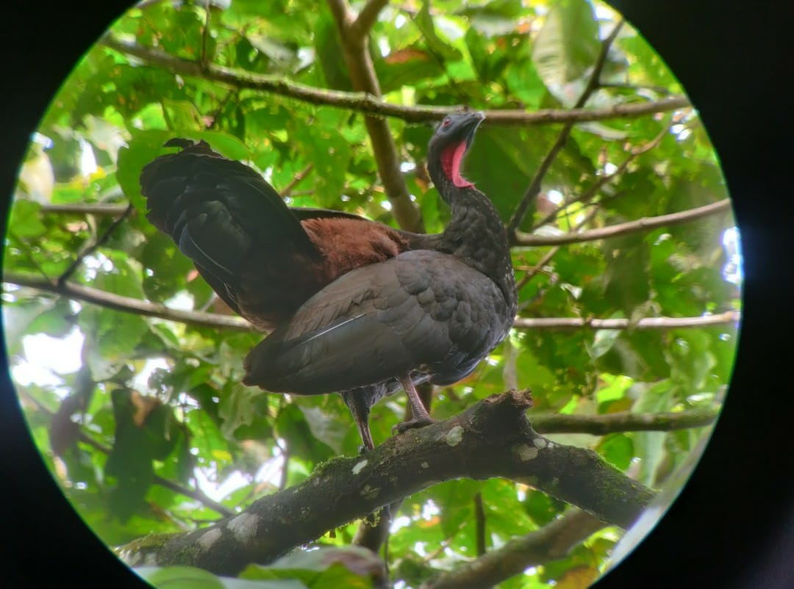

After a brief module where we learned markdown, I wanted to spend more time understanding the uses of DITA, and how to best utilize it for my project. Knowing that it is a named struggle to keep up with software and new methods, I enjoyed the idea of one language that transitions (or in DITA terms transforms) into other languages, such as HTML, PDF, and Indesign. I felt that this was a great extension to hone in on, due to the fact that mastering DITA could ease the burden of mastering the others. How far could this expand? Would developing my language knoweledge in DITA help me create more content that is easily edited?
Something that I have found common in my learning is that understanding a concept does not always create an understanding of a program, both need diligent practice and time to master and execute, and OxygenXML was not unique in its intricacies. While using this editor, I found that it did not follow my expected paths. In my "Pre-Semester Digital Literacy" tab, I mentioned how each skill learnt in micosoft word, email, and programs were natural steps. These literacy skills were not difficult to develop because the tasks and programs are incentivized to build on each other, and be intuitive so that users do not need to take as much time to learn, they just start using. With OxygenXML, as with HTML, I found that the programs require some prior knoweledge and a lot more tutorial and manual based learning. These are the tools that create the manuals and the sites with intuitve using! With my 30 day trial of OxygenXML, I found that I was having difficulty with the vocabulary and labelling and needed to go back to stage one to learn terms more readily and review the software online manuals to see where I was misstepping. Finally, with the help of office hours, I was able to transform my DITA files into a PDF and a website, and I was gratified to see how well they communicated without me needing to write extra code or reconfigure for each output. Overall, I am still impressed with the idea of DITA and how I could use it for my own projects, or even course-notes, with related topics and tasks.
I had some difficulities coming up with a theme for my DITAmap to surround, so I went back (as usual), to my work, since that is what I most readily know. I created a Semester Programs 101 manual as an idea that students could look through related terms and tasks in order to eventually complete the task of applying to a Study Abroad Program. This content didn't quite fit DITA's regular use, of which I imagine as "how to" portions (tasks) and part labels and vocabulary that is frequently updated. What I had entered is not subject to change anytime soon, but was a good place to start with since then I could spend more time thinking about the language writing, instead of the content. For learning, I found that this is the best way for me to connect my ideas on programs and software together, and then later I could put more thought into future use.
View the PDF version of my DITA project here: DITA PDF Semester Programs 101
View the files for my DITA project here: DITA Files
Where do you think I could improve? Contact me at kobi0025@umn.edu to let me know!
